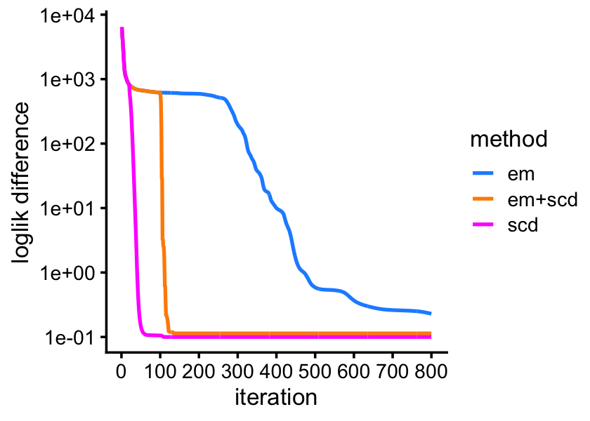

Last updated: 2024-06-26
Checks: 7 0
Knit directory:
fastTopics-experiments/analysis/
This reproducible R Markdown analysis was created with workflowr (version 1.7.1). The Checks tab describes the reproducibility checks that were applied when the results were created. The Past versions tab lists the development history.
Great! Since the R Markdown file has been committed to the Git repository, you know the exact version of the code that produced these results.
Great job! The global environment was empty. Objects defined in the global environment can affect the analysis in your R Markdown file in unknown ways. For reproduciblity it’s best to always run the code in an empty environment.
The command set.seed(1) was run prior to running the
code in the R Markdown file. Setting a seed ensures that any results
that rely on randomness, e.g. subsampling or permutations, are
reproducible.
Great job! Recording the operating system, R version, and package versions is critical for reproducibility.
Nice! There were no cached chunks for this analysis, so you can be confident that you successfully produced the results during this run.
Great job! Using relative paths to the files within your workflowr project makes it easier to run your code on other machines.
Great! You are using Git for version control. Tracking code development and connecting the code version to the results is critical for reproducibility.
The results in this page were generated with repository version 00f10c0. See the Past versions tab to see a history of the changes made to the R Markdown and HTML files.
Note that you need to be careful to ensure that all relevant files for
the analysis have been committed to Git prior to generating the results
(you can use wflow_publish or
wflow_git_commit). workflowr only checks the R Markdown
file, but you know if there are other scripts or data files that it
depends on. Below is the status of the Git repository when the results
were generated:
Ignored files:
Ignored: analysis/.sos/
Ignored: data/20news-bydate/
Ignored: data/droplet.RData
Ignored: data/nips_1-17.mat
Ignored: data/pbmc_68k.RData
Ignored: output/droplet/fits-droplet.RData
Ignored: output/newsgroups/de-newsgroups.RData
Ignored: output/newsgroups/fits-newsgroups.RData
Ignored: output/nips/fits-nips.RData
Ignored: output/pbmc68k/fits-pbmc68k.RData
Untracked files:
Untracked: analysis/lda-eb-newsgroups-em-k=10.rds
Untracked: analysis/lda-eb-newsgroups-scd-ex-k=10.rds
Untracked: analysis/lda-newsgroups-em-k=10.rds
Untracked: analysis/lda-newsgroups-scd-ex-k=10.rds
Untracked: analysis/maptpx-newsgroups-em-k=10.rds
Untracked: analysis/maptpx-newsgroups-scd-ex-k=10.rds
Untracked: plots/
Note that any generated files, e.g. HTML, png, CSS, etc., are not included in this status report because it is ok for generated content to have uncommitted changes.
These are the previous versions of the repository in which changes were
made to the R Markdown (analysis/smallsim_hard.Rmd) and
HTML (docs/smallsim_hard.html) files. If you’ve configured
a remote Git repository (see ?wflow_git_remote), click on
the hyperlinks in the table below to view the files as they were in that
past version.
| File | Version | Author | Date | Message |
|---|---|---|---|---|
| Rmd | 00f10c0 | Peter Carbonetto | 2024-06-26 | workflowr::wflow_publish("smallsim_hard.Rmd", view = FALSE, verbose = TRUE) |
| html | 8759fe2 | Peter Carbonetto | 2024-06-23 | Ran workflowr::wflow_publish("smallsim_hard.Rmd"). |
| Rmd | 4e9dfbe | Peter Carbonetto | 2024-06-23 | I’ve arrived at a good ‘smallsim’ example. |
| Rmd | 8a8630e | Peter Carbonetto | 2024-06-23 | Working on new smallsim_hard example. |
| Rmd | 0bb4102 | Peter Carbonetto | 2024-06-22 | Made some improvements to the smallsim_hard example. |
| Rmd | 0b42379 | Peter Carbonetto | 2024-06-22 | Working on new ‘smallsim_hard’ example. |
Here we perform a small experiment with simulated data to illustrate the behaviour of the EM and SCD algorithms for fitting Poisson NMF (and topic models). The basic variational EM algorithm for LDA also struggles with this data set.
Load the packages used in the analysis below, as well as some additional functions used to simulate the data and generate the results.
library(tm)
library(topicmodels)
library(fastTopics)
library(mvtnorm)
library(ggplot2)
library(cowplot)
source("../code/smallsim_functions.R")Simulate a \(100 \times 400\) counts matrix from a multinomial topic model with \(K = 6\) topics.
set.seed(4)
n <- 100
m <- 400
k <- 6
F <- simulate_factors(m,k)
out <- simulate_loadings(n,k)
L <- out$L
major_topic <- out$major_topic
s <- simulate_sizes(n)
X <- simulate_multinom_counts(L,F,s)
cols <- which(colSums(X > 0) > 0)
F <- F[cols,]
X <- X[,cols]We fit the multinomial topic model by performing 80 EM updates or 80 SCD updates. Both of the fits are initialized by running 20 EM updates.
control <- list(extrapolate = FALSE,numiter = 4)
fit0 <- fit_poisson_nmf(X,k,numiter=20,method="em",control=control)
fit1 <- fit_poisson_nmf(X,fit0=fit0,numiter=80,method="em",control=control)
fit2 <- fit_poisson_nmf(X,fit0=fit0,numiter=80,method="scd",control=control)EM and SCD produce quite different estimates, and among the two, the SCD estimates are much closer to the truth.
topic_colors <- c("dodgerblue","darkorange","forestgreen","darkblue",
"gold","skyblue")
loadings_order <- order(major_topic,L[,1])
k_set <- c(1,3,5,2,4,6)
p1 <- simdata_structure_plot(L,loadings_order,topic_colors,title = "true")
p2 <- simdata_structure_plot(poisson2multinom(fit1)$L,loadings_order,
topic_colors[k_set],title = "EM")
p3 <- simdata_structure_plot(poisson2multinom(fit2)$L,loadings_order,
topic_colors[k_set],title = "SCD")
plot_grid(p1,p2,p3,nrow = 3,ncol = 1)
| Version | Author | Date |
|---|---|---|
| 8759fe2 | Peter Carbonetto | 2024-06-23 |
Indeed, the SCD estimates also improve upon the EM estimates in terms of log-likelihood, with a total improvement of 600 log-likelihood units,
c("em" = sum(loglik_multinom_topic_model(X,fit1)),
"scd" = sum(loglik_multinom_topic_model(X,fit2)))
# em scd
# -31491.97 -30874.44or an average of 6 log-likelihood units per document,
c("em" = sum(loglik_multinom_topic_model(X,fit1)),
"scd" = sum(loglik_multinom_topic_model(X,fit2)))/n
# em scd
# -314.9197 -308.7444What is reassuring is that if we continue to perform the EM updates, we eventually arrive at the same solution as SCD. But SCD is able to “rescue” the EM estimates much more quickly after performing just a few SCD updates.
fit3 <- fit_poisson_nmf(X,fit0=fit1,numiter=700,method="em",control=control)
control$extrapolate <- TRUE
fit2 <- fit_poisson_nmf(X,fit0=fit2,numiter=700,method="scd",control=control)
fit4 <- fit_poisson_nmf(X,fit0=fit1,numiter=700,method="scd",control=control)
fit1 <- poisson2multinom(fit1)
fit2 <- poisson2multinom(fit2)
fit3 <- poisson2multinom(fit3)
fit4 <- poisson2multinom(fit4)
# loadings_scatterplot(F[,k_set],fit1$F,topic_colors,"true","em")
# loadings_scatterplot(F[,k_set],fit2$F,topic_colors,"true","scd")
pdat <- rbind(data.frame(iter = 1:800,
ll = fit2$progress$loglik.multinom,
method = "scd"),
data.frame(iter = 1:800,
ll = fit3$progress$loglik.multinom,
method = "em"),
data.frame(iter = 1:800,
ll = fit4$progress$loglik.multinom,
method = "em+scd"))
pdat <- transform(pdat,ll = max(ll) - ll + 0.1)
ggplot(pdat,aes(x = iter,y = ll,color = method)) +
geom_line(linewidth = 0.75) +
scale_x_continuous(breaks = seq(0,800,100)) +
scale_y_continuous(trans = "log10",breaks = 10^seq(-1,4)) +
scale_color_manual(values = c("dodgerblue","darkorange","magenta")) +
labs(x = "iteration",y = "loglik difference") +
theme_cowplot(font_size = 10)
| Version | Author | Date |
|---|---|---|
| 8759fe2 | Peter Carbonetto | 2024-06-23 |
sessionInfo()
# R version 4.3.3 (2024-02-29)
# Platform: aarch64-apple-darwin20 (64-bit)
# Running under: macOS Sonoma 14.5
#
# Matrix products: default
# BLAS: /Library/Frameworks/R.framework/Versions/4.3-arm64/Resources/lib/libRblas.0.dylib
# LAPACK: /Library/Frameworks/R.framework/Versions/4.3-arm64/Resources/lib/libRlapack.dylib; LAPACK version 3.11.0
#
# locale:
# [1] en_US.UTF-8/en_US.UTF-8/en_US.UTF-8/C/en_US.UTF-8/en_US.UTF-8
#
# time zone: America/Chicago
# tzcode source: internal
#
# attached base packages:
# [1] stats graphics grDevices utils datasets methods base
#
# other attached packages:
# [1] cowplot_1.1.3 ggplot2_3.5.0 mvtnorm_1.2-4 fastTopics_0.6-184
# [5] topicmodels_0.2-16 tm_0.7-13 NLP_0.2-1
#
# loaded via a namespace (and not attached):
# [1] gtable_0.3.4 xfun_0.42 bslib_0.6.1
# [4] htmlwidgets_1.6.4 ggrepel_0.9.5 lattice_0.22-5
# [7] quadprog_1.5-8 vctrs_0.6.5 tools_4.3.3
# [10] generics_0.1.3 stats4_4.3.3 parallel_4.3.3
# [13] tibble_3.2.1 fansi_1.0.6 highr_0.10
# [16] pkgconfig_2.0.3 Matrix_1.6-5 data.table_1.15.2
# [19] SQUAREM_2021.1 RcppParallel_5.1.7 lifecycle_1.0.4
# [22] truncnorm_1.0-9 farver_2.1.1 compiler_4.3.3
# [25] stringr_1.5.1 git2r_0.33.0 progress_1.2.3
# [28] munsell_0.5.0 RhpcBLASctl_0.23-42 httpuv_1.6.14
# [31] htmltools_0.5.7 sass_0.4.8 lazyeval_0.2.2
# [34] yaml_2.3.8 plotly_4.10.4 crayon_1.5.2
# [37] tidyr_1.3.1 later_1.3.2 pillar_1.9.0
# [40] jquerylib_0.1.4 whisker_0.4.1 uwot_0.1.16
# [43] cachem_1.0.8 gtools_3.9.5 tidyselect_1.2.1
# [46] digest_0.6.34 Rtsne_0.17 stringi_1.8.3
# [49] slam_0.1-50 purrr_1.0.2 dplyr_1.1.4
# [52] ashr_2.2-66 labeling_0.4.3 rprojroot_2.0.4
# [55] fastmap_1.1.1 grid_4.3.3 colorspace_2.1-0
# [58] cli_3.6.2 invgamma_1.1 magrittr_2.0.3
# [61] utf8_1.2.4 withr_3.0.0 prettyunits_1.2.0
# [64] scales_1.3.0 promises_1.2.1 httr_1.4.7
# [67] rmarkdown_2.26 workflowr_1.7.1 hms_1.1.3
# [70] modeltools_0.2-23 pbapply_1.7-2 evaluate_0.23
# [73] knitr_1.45 viridisLite_0.4.2 irlba_2.3.5.1
# [76] rlang_1.1.3 Rcpp_1.0.12 mixsqp_0.3-54
# [79] glue_1.7.0 xml2_1.3.6 jsonlite_1.8.8
# [82] R6_2.5.1 fs_1.6.3